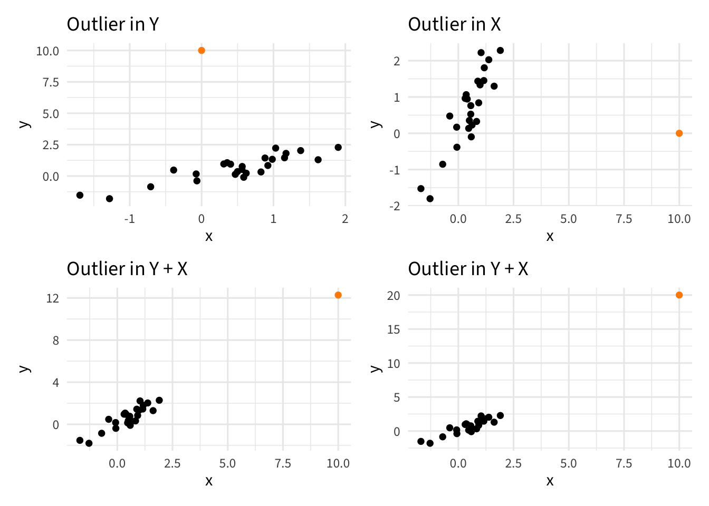
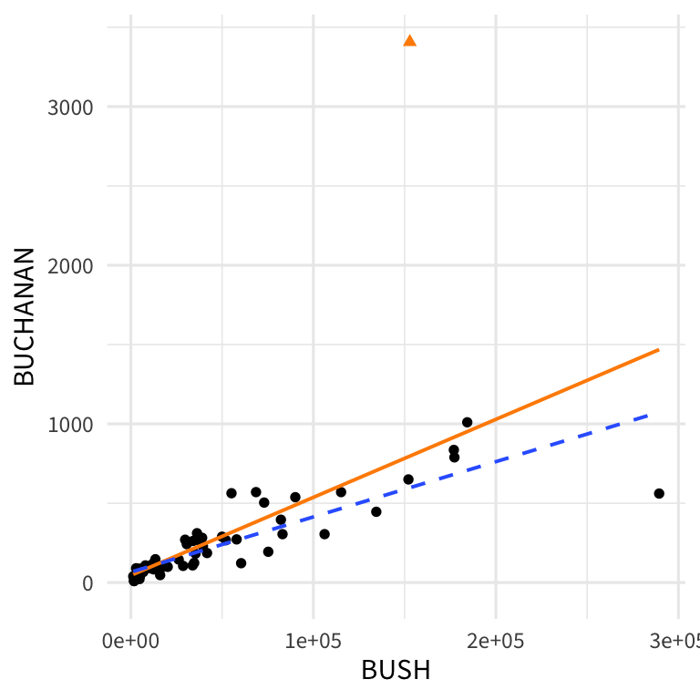
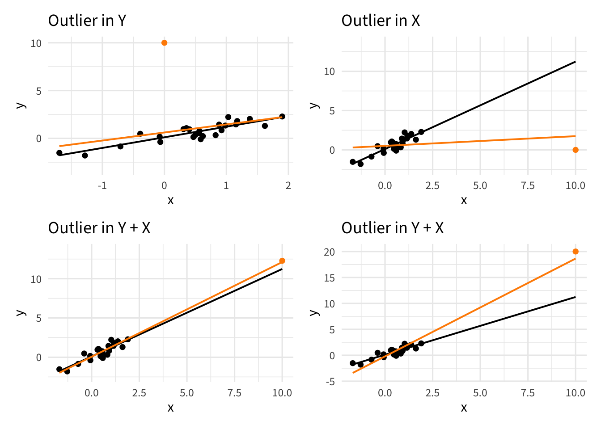
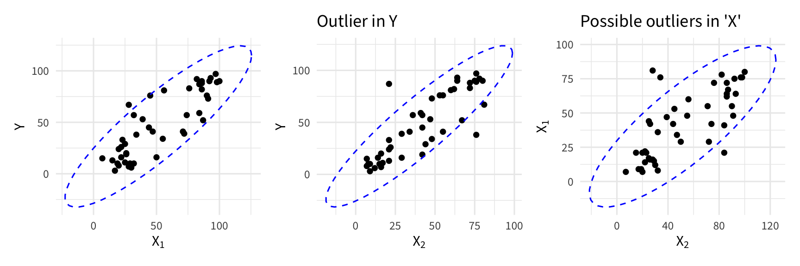
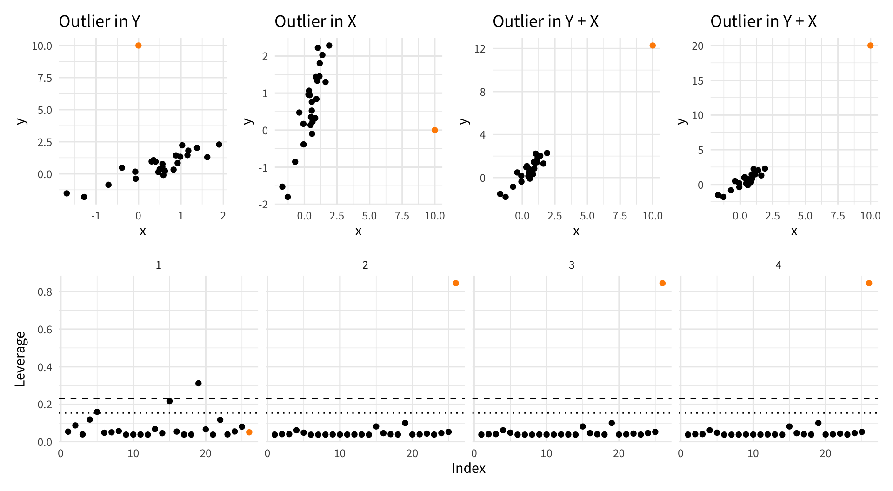
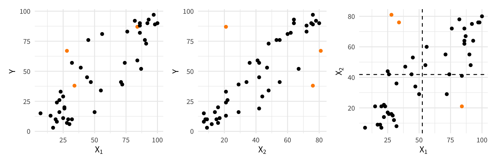
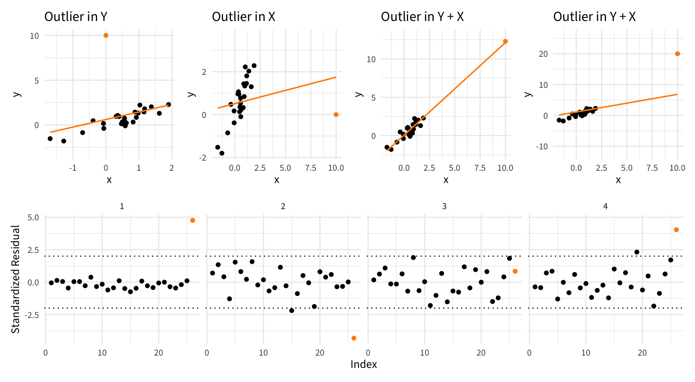
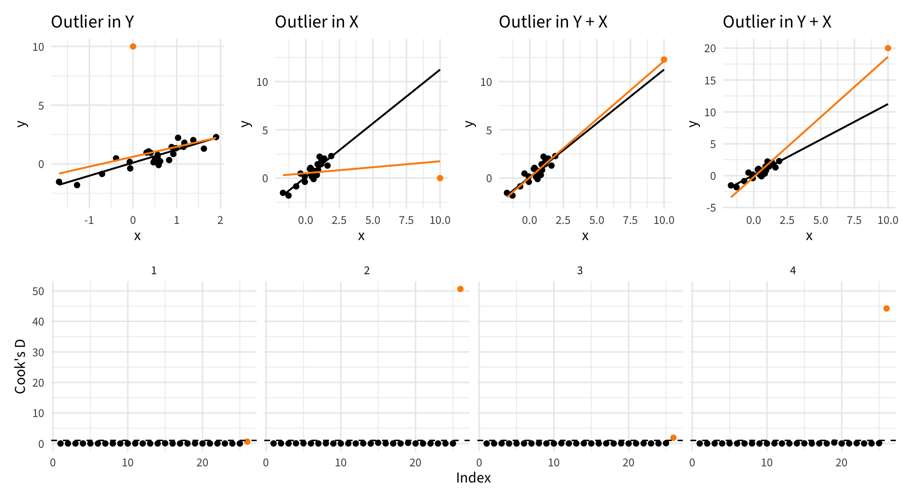
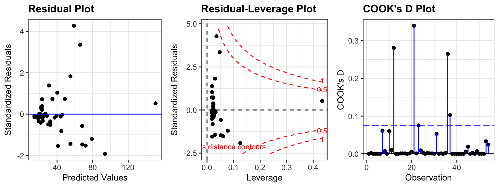

Day 13
Carleton College
Stat 230 - Spring 2026
Recap SLR LINE conditions
Which ones do you think will apply to MLR? How would we check them?
Solid line = with outliers; dashed line = without outliers

\[\widehat{\beta}_1 = r \cdot \dfrac{s_y}{s_x} \qquad \qquad \widehat{\beta}_0 = \bar{y} - \widehat{\beta}_1 \bar{x}\]
Why?
We’re still choosing the \(\widehat{\beta}_i\) to minimize the sum of squared residuals
\[ \begin{split} SSE &= \sum_{i=1}^n \left( y_i - \widehat{y}_i \right)^2\\ &= \sum_{i=1}^n \left( y_i - \widehat{\beta}_0 - \widehat{\beta}_1 x_{i1} - \widehat{\beta}_2 x_{i2} - ... - \widehat{\beta}_p x_{ip} \right)^2 \end{split} \]
Sum’s aren’t resistant to outliers!

How is each outlier influencing the regression line?
Orange line = SLR with outlier; Black line = SLR without outlier

Points that are able to substantially change the fitted model ares influential
How do we find outliers and determine if they are influential?

In higher dimensions, outliers can be tricky to detect
To detect outliers in X, you have to consider the multivariate relationships between all of the predictors
Measures the potential to influence the least squares line
For SLR:
\[h_i = \frac{1}{n-1} \left[ \frac{x_i - \bar{x}}{s_x} \right]^2 + \frac{1}{n} = \dfrac{1}{n} + \frac{\left(x_i - \bar{x}\right)^2}{\sum \left(x_i - \bar{x}\right)^2}\]
For MLR:
more complicated because we’re looking at a distance of a case from the average of p predictors
Cutoff
I use p to denote the number of slope coefficients, so there are p+1 regression coefficients
“Flares up” when value of x is far from the mean. Indicates potential to be influential

In higher dimensions, leverage is focusing on the distance from the average of all of the predictors

Standardized residuals are calculated by dividing the residuals by their standard deviation
\[r_i = \frac{e_i}{\widehat{\sigma} \sqrt{1 - \dfrac{1}{n} - \dfrac{(x_i - \overline{x})^2}{\sum (x_i - \overline{x})^2}}} = \dfrac{e_i}{ \widehat{\sigma} \sqrt{1 - h_{i}}}\]
Idea: Applies a “penalty” to high leverage points: accounts for the fact that if leverage is high, the line will be forced closer to the leverage point (making raw residual smaller).
Guidelines:
“Flare up” when value of y is far from \(\widehat{y}\)

Measures effect the ith case has on its own fitted value
\[DFFITS_i = \frac{\widehat{y}_i - \widehat{y}_{i(i)}}{\widehat{\sigma}_{(i)} \sqrt{h_i}}\] where the subscript \((i)\) indicates that the value is based on a model when observation i is omitted
Cutoff
Measures effect the ith case has on all of the fitted values
\[D_i= \sum_{j=1}^n\frac{ \left(\widehat{y}_{j(i)} - \widehat{y}_j \right)^2}{(p+1) \widehat{\sigma}} = \frac{r_i^2}{p+1} \left( \frac{h_i}{1-h_i} \right)\]
where \(\widehat{y}_{j(i)}\) is the fitted value for observation j based on a model when observation i is omitted (eg black line on next slide)
Cutoff
\(D_i\) near or above 1 indicates large influence
Also can judge relative standing of \(D_i\) — make an index plot

No!
augment(): lives in the {broom} package and computes:
.hat: Leverage.std.resid: Standardized residuals.cooksd: Cook’s distance| rides | temp_actual | .fitted | .resid | .hat | .sigma | .cooksd | .std.resid |
|---|---|---|---|---|---|---|---|
| 654 | 57.39952 | 2468.473 | -1814.4734 | 0.0088569 | 1251.355 | 0.0047283 | -1.4548281 |
| 1229 | 46.49166 | 2208.949 | -979.9488 | 0.0106412 | 1253.251 | 0.0016630 | -0.7864221 |
| 1454 | 46.76000 | 2232.341 | -778.3405 | 0.0103986 | 1253.540 | 0.0010247 | -0.6245522 |
| 1518 | 48.74943 | 2405.765 | -887.7648 | 0.0087187 | 1253.392 | 0.0011139 | -0.7117520 |
| 1362 | 46.50332 | 2209.965 | -847.9653 | 0.0106306 | 1253.448 | 0.0012439 | -0.6804999 |
| 891 | 44.17700 | 1310.392 | -419.3920 | 0.0312949 | 1253.887 | 0.0009344 | -0.3401368 |
| 1280 | 43.13148 | 1916.031 | -636.0313 | 0.0140011 | 1253.703 | 0.0009280 | -0.5112926 |
| 1220 | 44.47892 | 2033.492 | -813.4917 | 0.0125821 | 1253.493 | 0.0013604 | -0.6534793 |
| 1137 | 44.74725 | 2056.883 | -919.8834 | 0.0123110 | 1253.343 | 0.0017010 | -0.7388426 |
| 1368 | 44.17700 | 2007.173 | -639.1728 | 0.0128917 | 1253.700 | 0.0008610 | -0.5135292 |
resid_panel()
graph TD
%% Define the green color theme for all nodes
classDef default fill:#e8f5e9,stroke:#2e7d32,stroke-width:2px,color:#1b5e20;
A(["Do the conclusions change <br> when the case is deleted?"])
B["Proceed with the case in-<br>cluded. Study it to see if<br>anything can be learned."]
C(["Is there reason to believe<br>the case belongs to a popu-<br>lation other than the one<br>under investigation?"])
D["Omit the case and proceed."]
E(["Does the case have unusu-<br>ally 'distant' explanatory<br>variable values?"])
F["Omit the case and proceed.<br>Report conclusions for the<br>reduced range of explana-<br>tory variables."]
G["Not much can be said. More<br>data (or clarification of the<br>influential case) are need-<br>ed to resolve the questions."]
A -->|NO| B
A -->|YES| C
C -->|YES| D
C -->|NO| E
E -->|YES| F
E -->|NO| G
Source: Display 11.8 in Sleuth (3rd edition)